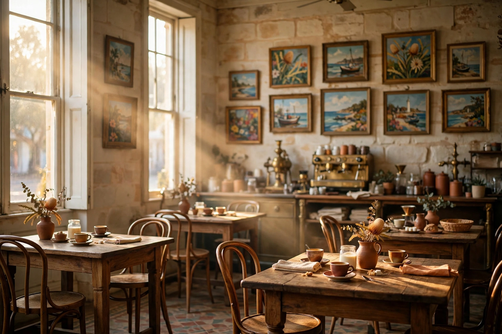
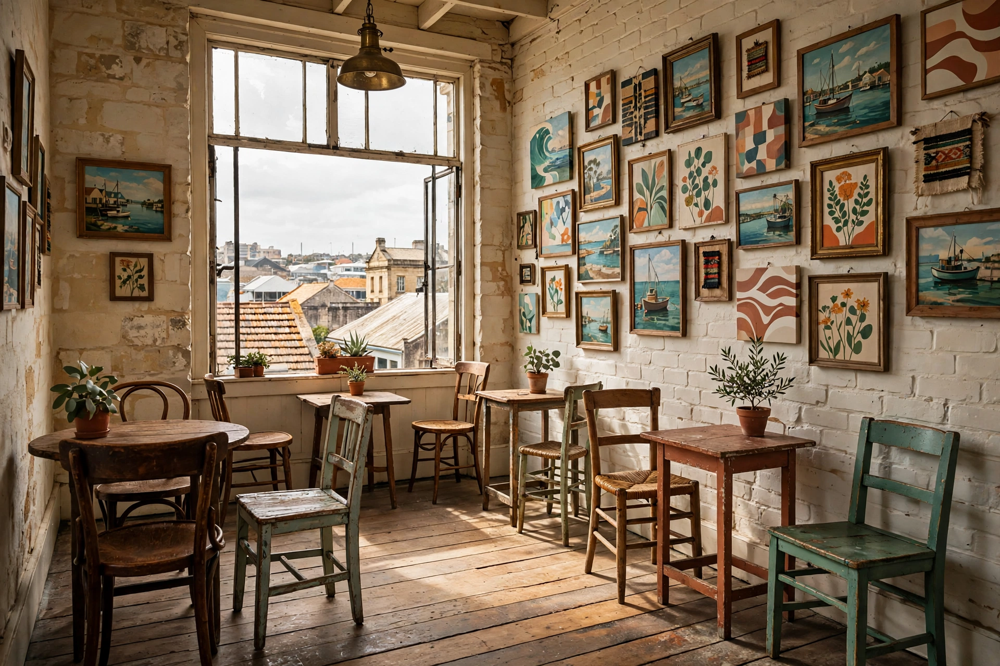

8 am
First light
The sun comes straight into the limestone room in the morning, the machine warms up, and the first full breakfasts land. Regulars take the window tables; the coffee, guests keep saying, is superb.
85 High Street, Fremantle, in the West End
An unhurried all-day breakfast and lunch in a two-storey limestone room just off the Cappuccino Strip: generous plates, superb coffee, and nowhere you need to be until four.
Open Tuesday to Sunday, 8 am to 4 pm

Breaks keeps café hours the old way, eight to four, six days a week, and the room changes with the light as the day crosses High Street.
8 am
The sun comes straight into the limestone room in the morning, the machine warms up, and the first full breakfasts land. Regulars take the window tables; the coffee, guests keep saying, is superb.
11 am
Brunch hours. Pancakes with maple syrup and vanilla ice cream, crêpes, Marg’s Morning on toast: breakfast here runs all day, so nobody has to hurry a sleep-in.
1 pm
The kitchen turns to burgers, salads and a Thai green curry the regulars order weekly. By mid-afternoon the Doctor (Fremantle’s sea breeze) is rolling down High Street, and the room slows with it.
Doors close at 4 pm. Mondays, the café rests.
Swipe through. Limestone, jarrah, local art, and light that does most of the decorating.

Breaks sits in a heritage room on High Street, in the West End Fremantle built in the gold-boom years: limestone walls, jarrah tables, and local artwork covering nearly every surface. Guests describe it simply: homely, spacious, and filled with colour and life.
Downstairs is the buzz of the counter and the machine. Upstairs is the same café at half volume: a cute, quieter floor where students, readers and long lunches settle in. The name is the house rules, really. A break is an interval, an interruption, an indulgence, and this room is built for all three.
“A homely two-storey café in Fremantle. Come here for brunch vibes in a relaxed manner. A Freo staple.”A guest, on Google
Open Tuesday to Sunday, 8 am to 4 pm
85 High Street, Fremantle WA 6160
West End, just off the Cappuccino Strip
| Monday | Closed |
|---|---|
| Tuesday | 8 am to 4 pm |
| Wednesday | 8 am to 4 pm |
| Thursday | 8 am to 4 pm |
| Friday | 8 am to 4 pm |
| Saturday | 8 am to 4 pm |
| Sunday | 8 am to 4 pm |
Hours per the café’s Google listing. Public-holiday hours may differ; the Facebook page has the latest.